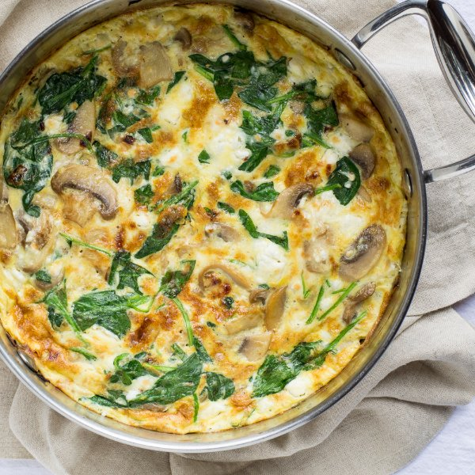

Spinach, Mushroom & Feta Frittata with Grape Tomatoes

Nutrition (per serving)
440.3 kcalCalories
26.1 gProtein
12.6 gCarbs
32.8 gFat
Full nutrition table
| Calories | 440.3 kcal |
| Total fat | 32.8 g |
| Saturated fat | 10.3 g |
| Trans fat | 0.4 g |
| Cholesterol | 516.2 mg |
| Sodium | 485.5 mg |
| Carbohydrates | 12.6 g |
| Fiber | 3.3 g |
| Sugars | 7.1 g |
| Protein | 26.1 g |
| Potassium | 966.4 mg |
| Calcium | 266.7 mg |
| Iron | 4.4 mg |
| Vitamin A | 1426.7 IU |
| Vitamin C | 24.1 mg |
| Vitamin D | 120.7 IU |
Cookware
Ingredients
- 1 (5 oz) pkgbaby spinach
- 1 (4 oz) pkgcrumbled feta cheese
- 12eggs
- 1 pintgrape tomatoes
- 1 lbwhite mushrooms
- 1 mediumyellow onion
- black pepper
- extra virgin olive oil
- salt
Steps
- Wash and dry the fresh produce. (Skip the spinach if it came pre-washed.)1 pint grape tomatoes
1 lb white mushrooms
1 (5 oz) pkg baby spinach - Slice the mushrooms; transfer to a medium bowl.
- Peel and small dice the onion; transfer to a small bowl.1 medium yelllow onion
- Preheat a skillet over medium heat.
- Preheat the oven to the broil setting.
- Add olive oil to the skillet and swirl to coat the bottom. Add the diced onion and cook, stirring frequently, until translucent, 2 to 3 minutes.2 tbsp extra virgin olive oil
- Add more olive oil and the mushrooms to the skillet; cook, stirring occasionally, until the mushrooms are tender, 3 to 4 minutes.2 tbsp extra virgin olive oil
- While the mushrooms cook, in a large bowl, combine and whisk together the eggs, water, salt, and black pepper.12 eggs
4 tbsp water
½ tsp salt
½ tsp black pepper - Add the spinach (a handful at a time) to the skillet and stir until wilted, 1 to 2 minutes.
- Pour the egg mixture over top the vegetables and sprinkle with the feta cheese.1 (4 oz) pkg crumbled feta cheese
- While tilting the skillet with one hand, lift up the edges of the frittata with a spatula and let the eggs run underneath during the first few minutes of cooking. Cook until most of the frittata is set, but the top is still runny, 4 to 5 minutes.
- Transfer the skillet to the oven and broil until the top is set and lightly browned, 2 to 3 minutes.
- Separate the frittata into wedges and divide between four plates (or two plates and two lunch containers). Serve with the grape tomatoes on the side. Enjoy!